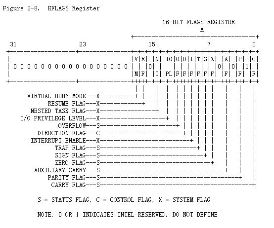
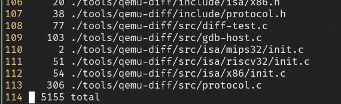

填坑
PA1 - 开天辟地的篇章：最简单的计算机
实现x86的寄存器
很关键的一张图
1 | typedef struct { |
希望下面的每一个寄存器（eax…）能和上面结构体中的结构进行对应
x86寄存器的这种结构很适合用union来表达
1 | typedef struct { |
reg_test()是如何测试你的实现的?
reg_l,reg_w,reg_b是/nemu/src/isa/x86/local-include/reg.h定义的三个宏，分别对应32位、16位、8位寄存器
给每一个32位寄存器赋一个随机值，然后依次检查其低16位低8位的值，最后检查pc
在cmd_c()函数中, 调用cpu_exec()的时候传入了参数-1, 你知道这是什么意思吗?
循环for (; n > 0; n--)，传入-1使得这个循环总是成立，所以会执行完全部的指令
完善调试器
单步执行
1 | static int cmd_si(char *args) { |
打印寄存器
1 | static int cmd_info(char *args) { |
1 | void isa_reg_display() { |
扫描内存
注意要#include "../../../include/memory/vaddr.h"
PA1第一阶段到此结束
表达式求值
实现算术表达式的词法分析
RTFC找到这部分的执行逻辑
表达式求值相关代码位于/home/leyan/ics2020/nemu/src/monitor/debug/expr.c，在./ui.c中#include "expr.h"，./expr.h中只有一个函数声明word_t expr(char*, char*)，也就是说在./ui.c中所有表达式求值的功能都由expr()这个函数来进行。
词法分析的任务相对简单，只需要把token类型写进枚举中，rule数组中存放由正则表达式和类型组成的规则
对表达式进行匹配的部分框架已经写好了，只需要对于识别出的token一次扔到tokens数组中即可，有些特殊的token需要特殊处理，例如TK_NOTYPE，表示空格，空格在词法解析中会被忽略，因此直接break就行。
这里有一个小坑就是strncpy不会包含最后的\0，需要手动加上。
实现算术表达式的递归求值
递归求值的部分文档里写的很清晰，只要填框架就行了，目前没有发现坑。
实现表达式生成器
这一部分的代码在/nemu/tools/gen-expr.c中，大体的思路就是先生成表达式字符串，在把它塞进这样一个C语言代码字符串里：
1 | "#include <stdio.h>\n" |
然后输出到文件里，调用gcc编译运行并获得输出结果。
一些细节：
- 如何保证表达式进行无符号运算?
- 先进行有符号运算最后转成无符号数
- 如何生成长表达式, 同时不会使
buf溢出?- 设定一个上限，超过了就返回
- 如何过滤求值过程中有除0行为的表达式?
- 调用gcc的时候把所有警告视为错误，这样
system的返回值不为零，就不会写进文件里
- 调用gcc的时候把所有警告视为错误，这样
有了表达式生成器就可以测试之前的递归求值了
PA1阶段2到此结束
监视点
监视点的功能是监视一个表达式的值何时发生变化。
扩展算数表达式求值功能
1 | <expr> ::= <decimal-number> |
这个部分硬写就行，重点是单目运算符的实现，框架中给出了思路，在正则匹配的阶段是无法区分乘号*和解引用*的，需要在识别出token之后，求值之前，把解引用标识出来
解引用是单目运算，因此左边不能是数字或右括号
在寻找主运算符的过程中，要注意单目运算符的优先级高，找主运算符时应该跳过
负数的处理也类似
实现监视点
监视点池就是一个链表，注意删除的时候判断空，否则会触发段错误
没什么好说的，就是一些链表操作、
调试的建议
- 总是使用
-Wall和-Werror - 尽可能多地在代码中插入
assert() assert()无法捕捉到error时, 通过printf()输出可疑的变量, 期望能观测到errorprintf()不易观测error时, 通过GDB理解程序的精确行为
断点的工作原理
在PA中可以用w pc == ADDR来模拟断点，但是这样会影响效率
How debuggers work: Part 2 - Breakpoints
这篇文章介绍了GDB打断点的原理，简要概括如下：
- 断点通过软中断（trap / software interrupts）实现
- 发生中断时，CPU会保存当前的状态，跳转到一个事先确定的处理相应中断的程序的位置
- 硬件中断和软件中断都是如此
- 断点通过一种特殊的trap——
int3来实现- 这里的
int不是类型，而是x86对于trap指令的一种术语，指的是对预先定义的处理程序的调用，interrupt int指令可以跟一个8位的操作数，这个操作数表明了中断的编号，理论上可以有$2^8 = 256$种中断，我们关心的中断是三号中断int3int3称为trap to debugger
- 这里的
- 当进程执行
int3指令时，OS会停止当前的进程，并向他发送一个SIGTRAP信号
思考题：
- x86的
int3指令不带任何操作数, 操作码为1个字节, 因此指令的长度是1个字节. 这是必须的吗? 假设有一种x86体系结构的变种my-x86, 除了int3指令的长度变成了2个字节之外, 其余指令和x86相同. 在my-x86中, 上述文章中的断点机制还可以正常工作吗? 为什么?
如何阅读手册
查阅手册回答
EFLAGS寄存器中的CF位是什么意思?
CF：Carry Flag 进位标志

ModR/M字节是什么?
ModR/M是x86指令中的一个字节
x86指令的一般格式如下:
1
2
3
4
5
6
7
8+-----------+-----------+-----------+--------+------+------+------+------------+-----------+
|instruction| address- | operand- |segment |opcode|ModR/M| SIB |displacement| immediate |
| prefix |size prefix|size prefix|override| | | | | |
|-----------+-----------+-----------+--------+------+------+------+------------+-----------|
| 0 OR 1 | 0 OR 1 | 0 OR 1 | 0 OR 1 |1 OR 2|0 OR 1|0 OR 1| 0,1,2 OR 4 |0,1,2 OR 4 |
| - - - - - - - - - - - - - - - - - - - - - - - - - - - - - - - - - - - - - - - - - - - - -|
| number of bytes |
+------------------------------------------------------------------------------------------+除了opcode(操作码)必定出现之外, 其余组成部分可能不出现, 而对于某些组成部分, 其长度并不是固定的. 但给定一条具体指令的二进制形式, 其组成部分的划分是有办法确定的, 不会产生歧义(即把一串比特串看成指令的时候, 不会出现两种不同的解释).
去手册中查询指令的一般格式
17.2 Instruction Format- ModR/M 和 SIB 字节跟在 opcode 后面， 包括以下信息
- 指令中要使用的索引类型或者寄存器号
- 要使用的寄存器或者用来选择指令的更多信息
- base, index, 和 scale 的相关信息
- ModR/M 字节包括三部分信息:
- mod field, 占用字节的两个最高位, 和 r/m field 结合表示32个可能的值: 8个寄存器和和24个 index mode。
- The reg field, 占用 mod field 接下来的三位，决定是寄存器号还是 opdode 的额外3位，取决于 opcode 的第一个字节。
- The r/m field, 占用三个最低位, 决定寄存器是操作数的位置或者可以与上述字段结合形成寻址模式编码的一部分。
- ModR/M 和 SIB 字节跟在 opcode 后面， 包括以下信息
mov指令的具体格式是怎么样的?
1
2
3
4
5
6
7
8
9
10
11
12
13
14
15
16
17
18
19
20
21
22Opcode Instruction Clocks Description
88 /r MOV r/m8,r8 2/2 Move byte register to r/m byte
89 /r MOV r/m16,r16 2/2 Move word register to r/m word
89 /r MOV r/m32,r32 2/2 Move dword register to r/m dword
8A /r MOV r8,r/m8 2/4 Move r/m byte to byte register
8B /r MOV r16,r/m16 2/4 Move r/m word to word register
8B /r MOV r32,r/m32 2/4 Move r/m dword to dword register
8C /r MOV r/m16,Sreg 2/2 Move segment register to r/m word
8E /r MOV Sreg,r/m16 2/5,pm=18/19 Move r/m word to segment register
A0 MOV AL,moffs8 4 Move byte at (seg:offset) to AL
A1 MOV AX,moffs16 4 Move word at (seg:offset) to AX
A1 MOV EAX,moffs32 4 Move dword at (seg:offset) to EAX
A2 MOV moffs8,AL 2 Move AL to (seg:offset)
A3 MOV moffs16,AX 2 Move AX to (seg:offset)
A3 MOV moffs32,EAX 2 Move EAX to (seg:offset)
B0 + rb ib MOV reg8,imm8 2 Move immediate byte to register
B8 + rw iw MOV reg16,imm16 2 Move immediate word to register
B8 + rd id MOV reg32,imm32 2 Move immediate dword to register
C6 ib MOV r/m8,imm8 2/2 Move immediate byte to r/m byte
C7 iw MOV r/m16,imm16 2/2 Move immediate word to r/m word
C7 id MOV r/m32,imm32 2/2 Move immediate dword to r/m dword
统计代码行数
1 | find ./ -name "*.[ch]" | xargs wc -l > statistic |

PA0 时的代码行数:

PA1到此结束PA2 - 简单复杂的机器: 冯诺依曼计算机系统
先给出了一段YEMU的代码，其中模拟了最简单的计算机
1 | // 定义指令格式 |
这部分定义了指令格式，其中用到了位域（Bit field）的结构
RTFC
isa-cpu-exec()中，代码首先定义了一个DecodeExecState类型的结构体变量s, 它用于存放在执行一条指令过程中的译码和执行信息
1 | typedef struct { |
部分isa相关信息存放在ISADecodeInfo中1
2
3
4
5
6
7
8// decode
typedef struct {
bool is_operand_size_16;
uint8_t ext_opcode;
const rtlreg_t *mbase;
rtlreg_t mbr;
word_t moff;
} x86_ISADecodeInfo;
这里定义的是x86_ISADecodeInfo，但是在代码中直接用的是ISADecodeInfo，是因为
include/isa.h:13:typedef concat(__ISA__, _ISADecodeInfo) ISADecodeInfo;
这样可以让框架代码不随ISA而改变
concat(x, y)同样是一个宏，作用是把两个字符串x,y拼在一起，也就是说concat(x86, _ISADecodeInfo) == x86_ISADecodeInfo
取指
取指实质上就是读内存，在pc指向的位置读一条长度为len的指令，返回读到的指令
Debug状态下会把指令的每一个字节放到一个外部数组log_bytebuf[]中。
这里读内存使用的是vaddr_ifetch()，看上去是读虚拟内存，实际上现阶段都是直接访问物理内存。
1 | static inline uint32_t instr_fetch(vaddr_t *pc, int len) { |
译码
译码实质上就是查表，把取出的指令的opcode提取出来，然后根据opcode去查表确定指令类型，这里用一个很大的switch-case来进行，其中用到了一些宏。
这些宏先设置操作数的宽度，再进行操作数译码
1 | // empty decode helper |
这些宏一个套一个，最终都是来自CASE_ENTRY，其中的s是DecodeExecState *s，他被用作这些函数的参数，且总叫做s。
例如：
IDEXW(0x80, I2E, gp1, 1) == CASE_ENTRY(0x80, decode_I2E, exec_gp1, 1)
IDEX(0x81, I2E, gp1) == IDEXW(0x80, I2E, gp1, 0) == CASE_ENTRY(0x81, decode_I2E, exec_gp1, 0)
EX(0x0f, 2byte_esc) == EXW(0x0f, 2byte_esc, 0) == IDEXW(0x0f, empty, 2byte_esc, 0) == CASE_ENTRY(0x0f, decode_empty, exec_2byte_esc, 0)
其中的decode_开头的函数都是译码辅助函数
执行
#define def_EHelper(name) void concat(exec_, name) (DecodeExecState *s)，用于执行，exec_开头的都是执行辅助函数。
更新PC
下一条指令有静态动态两种，默认情况下取指结束后s->seq_pc会指向下一条静态地址，如果有跳转指令，s->jmp_pc会指向下一条动态指令，真正修改的时候调用update_pc()即可。
使用RTL表示指令行为
- RTL寄存器
- PA1中已经实现
请整理一条指令在NEMU中的执行过程
si 1cpu_exec(n=1) at src/monitor/cpu_exec.cisa_exec_once() at src/isa/x86/exec/exec.cfetch_decode_exec (s=0x7ffffffed860) at src/isa/x86/exec/exec.c:144instr_fetch (len=1, pc=0x7ffffffed864) at src/isa/x86/exec/exec.c:144取指IDEX(0xb8, mov_I2r, mov)指令是移动立即数到寄存器set_width (width=0, s=0x7ffffffed860) at src/isa/x86/exec/exec.c:108s->src1.width = s->dest.width = s->src2.width = width; //width = 4设置操作数宽度decode_mov_I2r (s=0x7ffffffed860) at src/isa/x86/exec/../local-include/decode.h:166开始译码操作数decode_op_r (load_val=0 '\000', op=0x7ffffffed8b8, s=0x7ffffffed860) at src/isa/x86/exec/../local-include/decode.h:167load_val = 0表示这个操作数不需要存储到s中供后续使用operand_reg (s=0x7ffffffed860, width=4, r=0, load_val=0 '\000', op=0x7ffffffed8b8) at src/isa/x86/exec/../local-include/decode.h:8找出要用到的寄存器decode_op_I (load_val=1 '\001', op=0x7ffffffed870, s=0x7ffffffed860) at src/isa/x86/exec/../local-include/decode.h:168operand_imm (width=<optimized out>, imm=<optimized out>, load_val=<optimized out>,op=<optimized out>, s=<optimized out>) at src/isa/x86/exec/../local-include/decode.h:40找出立即数，用到一条rtl_li